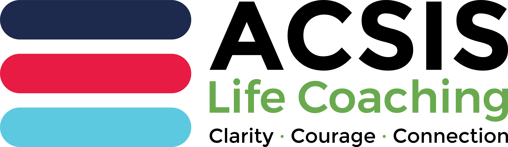

Coaching toolbox
ACSIS workbook tools
Interactive coaching worksheets, arranged alphabetically. Your answers save only in this browser. Use Save as PDF to download a completed sheet, then send it to your coach before your next session.

5-Year Vision
Build the dream in detail, then work back to Year 1
Clarity
ACHIEVE
Seven stages for complex challenges and sustained momentum
Clarity · Courage
ACSIS 3C
Clarity, Courage and Connection, sustained
ACSIS model
After Action Review (AAR)
Turn experience into learning without blame
Clarity · Courage
CLEAR
Contract, Listen, Explore, Action and Review
Connection
Eisenhower Matrix
Sort the week by urgency and importance
Clarity
FUEL
Frame, Understand, Explore and Lay out a success plan
Clarity · Connection
Gestalt Cycle
Notice where awareness or action may be getting stuck
Clarity
Johari Window
Compare separate SELF and observer adjective selections
Clarity · Connection
Ladder of Inference
Separate observed facts from meaning, assumptions and action
Clarity
Life Navigation Compass
Find your next direction without needing the whole route
Clarity · Courage
Mission Planning Worksheet
Build a clear, supported and adaptable plan
Clarity · Courage
Nature Connection Audit
Notice accessible ways to connect with nature
Connection
Operational Readiness Review
See what is ready and what needs strengthening
Clarity · Courage
OSCAR
Outcome, Situation, Choices, Actions and Review
Clarity
PERMA Wellbeing
A guided wellbeing snapshot with evidence and one practical action
Clarity · Connection
Personal SWOT
Strength, Weakness, Opportunity and Threat made clear
Clarity
Pomodoro
Plan a two-hour focus set and catch distractions
Clarity
Resilience Condition State Assessment
Check current capacity and choose a proportionate response
Courage · Connection
Scaling Questions
Use a 0 to 10 scale to notice movement
Clarity
Scripts
Prepare how to start an important or difficult conversation
Courage · Connection
SMART Action
Make an action specific and workable
Clarity
Solution-Focused
Preferred future, exceptions, strengths and next step
Clarity · Courage
STEPPPA
Subject, Target, Emotion, Perception, Plan, Pace and Action
Clarity · Courage
STOKeRS
Open and right-size the session conversation
Clarity
T-GROW
Topic, Goal, Reality, Options and Way Forward
Clarity
Values and Purpose Alignment Check
Explore fit, tension, trade-offs and adjustment
Clarity · Courage
Values Check
Explore what matters and whether choices align
Clarity · Courage
Weekly Situation Report (SITREP)
Capture progress, pressure points and support needs
Clarity · Connection
Wheel of Life
Build your own wheel and compare satisfaction with importance
Clarity · Connection
WOOP
Wish, Outcome, inner Obstacle and a practical if-then Plan
Clarity · Courage